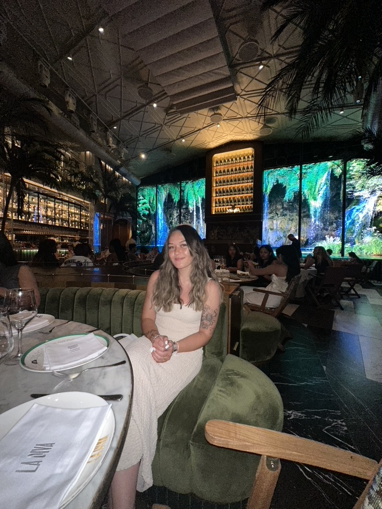

ANNIE WÅGSTRÖM
portfolio
My name is Annie Wågström, 23 years old and I'm originally from Nässjö, Sweden. I'm a New Media Design student and the reason I chose New Media Design is that I've always been interested in different types of design such as home decoration, how things are designed both digitally and physical, and other details. It has always been appealing to me. I guess I'm quite creative who loves both art and music. I'm looking forward for the coming years in NMD! I also think creating my first website, in other words this one, was the most fun so far. I currently live in Eksjö with my boyfriend Simon and my little cat Alma! And also, I almost forgot, I guess you could see my favorite colour as well🤪.